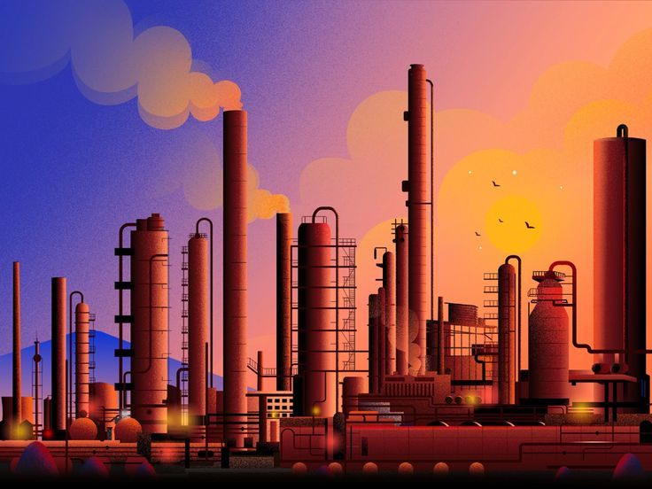

Implementing Stricter Emissions Standards
To combat the concerning levels of air pollution, governments worldwide have responded by enforcing stringent regulations targeting emissions from vehicles and industries. These directives focus on reducing the release of nitrogen oxides (NOx), sulfur oxides (SOx), and particulate matter (PM), all of which pose severe health risks. These tighter standards play a critical role in promoting a healthier environment by curbing the harmful gases and particles emitted into the air.
Promoting Electric Vehicles (EVs)

As urban areas grapple with escalating pollution levels, electric vehicles (EVs) have emerged as a promising remedy. The transition to EVs presents a solution that effectively addresses the issue of air pollution. With zero tailpipe emissions, electric vehicles stand as a cleaner alternative to conventional gasoline-powered cars. Governments are actively advocating for EV adoption by offering various incentives such as tax breaks, subsidies, and the establishment of extensive charging infrastructure.
Investing in Renewable Energy Sources
The shift from fossil fuels to renewable energy, particularly solar and wind power, demonstrates considerable potential in decreasing air pollution emissions. Recognizing this potential, governments are making significant investments in renewable energy projects. Complemented by policies like renewable energy mandates and feed-in tariffs, these measures actively encourage the utilization of cleaner and more sustainable energy sources.
Enforcing Stricter Regulations on Industrial Emissions
Industries are substantial contributors to air pollution, thus making it imperative to regulate emissions resulting from their operations. Governments are vigilantly ensuring that industries adhere to emissions limits and adopt advanced pollution control technologies. These regulations aim to curtail emissions from diverse industrial processes, including power generation, manufacturing, and waste incineration.
Implementing Car-Free Zones and Low-Emission Zones
In areas severely impacted by air pollution, governments are introducing specific zones, either car-free or low-emission zones, to alleviate traffic congestion and improve air quality. These zones restrict the usage of certain vehicle types, particularly older diesel models, and promote the adoption of cleaner transportation options such as public transit, cycling, and walking.
Raising Public Awareness about Air Pollution
Public awareness campaigns play a pivotal role in informing individuals about the health repercussions of air pollution. These initiatives aim to motivate people to take proactive measures to reduce emissions. By educating the public on eco-friendly transportation choices, energy-saving practices, and the adoption of clean cooking fuels, these campaigns serve as catalysts for behavioral change.
Investing in Research and Development of New Technologies
Governments are actively investing in research and development programs to create innovative technologies capable of effectively reducing air pollution. This investment includes the development of more efficient air filters, cleaner industrial processes, and advanced pollution control technologies. These new advancements are crucial in the ongoing fight against air pollution.